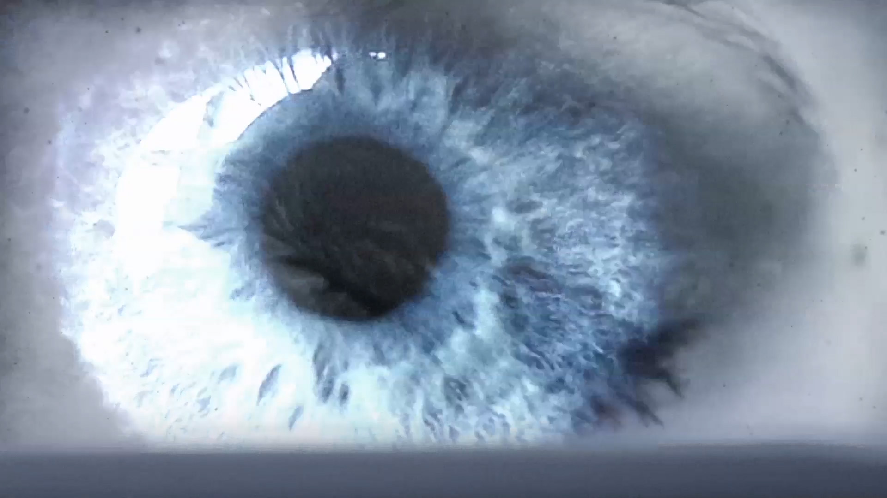
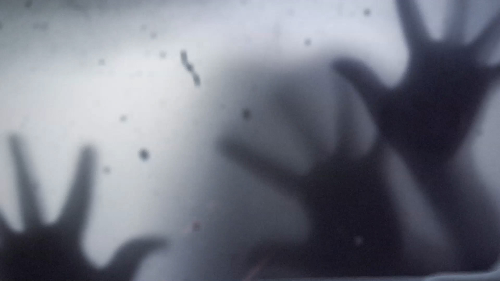

I'm Sorry
Our animator got task to film a short film,he wanted to make a title sequence for his film.The genre of this short film is thriller.This thriller is a supernatural story that reveal the power of a pair of eyes.We chose a dark tone for this sequence.
In order to build the fearful atmosphere,we decided to use extreme close up of the eye, shadow of hands and mouth.
